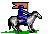
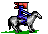
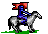
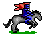

<!doctype html><meta charset=utf-8><title>Glory of Rome art</title>
<style>
body{background:#1b1b1b;color:#9a9a9a;font:12px/1.4 sans-serif;margin:0;padding:0 24px 60px}
nav{position:sticky;top:0;background:#1b1b1b;padding:12px 0;border-bottom:1px solid #333;z-index:1}
nav a{color:#8cf;margin-right:14px;text-decoration:none}
h1{color:#eee;font-size:18px;margin:34px 0 4px;text-transform:capitalize}
h2{color:#8cf;font-size:13px;font-weight:normal;margin:14px 0 6px;text-transform:capitalize}
small{color:#666;font-weight:normal;font-size:11px}
.row{display:grid;grid-template-columns:repeat(auto-fill,108px);gap:6px;align-items:end}
.c{margin:0;padding:6px;background:#262626;border:1px solid #333;text-align:center;width:96px;box-sizing:content-box}
.c img{image-rendering:pixelated;display:block;margin:0 auto}
figcaption{font-size:10px;color:#aaa;margin-top:4px;background:#1b1b1b;padding:1px 4px;white-space:nowrap;overflow:hidden;text-overflow:ellipsis}
</style>
<nav><a href="#classes">classes</a> <a href="#combat">combat</a> <a href="#font">font</a> <a href="#sprites">sprites</a> <a href="#tiles">tiles</a> <a href="#troops">troops</a> <a href="#ui">ui</a> <a href="#villains">villains</a> <small>388 files</small></nav>
<section id="classes"><h1>classes <small>8</small></h1><h2>portraits <small>4</small></h2><div class="row"><figure class="c" style="grid-column:span 2;width:auto"><figcaption title="dux">dux</figcaption></figure><figure class="c" style="grid-column:span 2;width:auto"><figcaption title="legatus">legatus</figcaption></figure><figure class="c" style="grid-column:span 2;width:auto"><figcaption title="praetorianus">praetorianus</figcaption></figure><figure class="c" style="grid-column:span 2;width:auto"><figcaption title="sibylla">sibylla</figcaption></figure></div><h2>heroes <small>4</small></h2><div class="row"><figure class="c"><figcaption title="dux_hero">dux_hero</figcaption></figure><figure class="c"><figcaption title="legatus_hero">legatus_hero</figcaption></figure><figure class="c"><figcaption title="praetorianus_hero">praetorianus_hero</figcaption></figure><figure class="c"><figcaption title="sibylla_hero">sibylla_hero</figcaption></figure></div></section><section id="combat"><h1>combat <small>15</small></h1><h2>field <small>1</small></h2><div class="row"><figure class="c"><figcaption title="field_grass">field_grass</figcaption></figure></div><h2>castle walls <small>7</small></h2><div class="row"><figure class="c"><figcaption title="castle_spike">castle_spike</figcaption></figure><figure class="c"><figcaption title="castle_wall_01">castle_wall_01</figcaption></figure><figure class="c"><figcaption title="castle_wall_02">castle_wall_02</figcaption></figure><figure class="c"><figcaption title="castle_wall_03">castle_wall_03</figcaption></figure><figure class="c"><figcaption title="castle_wall_04">castle_wall_04</figcaption></figure><figure class="c"><figcaption title="castle_wall_05">castle_wall_05</figcaption></figure><figure class="c"><figcaption title="castle_wall_06">castle_wall_06</figcaption></figure></div><h2>obstacles <small>3</small></h2><div class="row"><figure class="c"><figcaption title="obstacle_01">obstacle_01</figcaption></figure><figure class="c"><figcaption title="obstacle_02">obstacle_02</figcaption></figure><figure class="c"><figcaption title="obstacle_03">obstacle_03</figcaption></figure></div><h2>cursor <small>4</small></h2><div class="row"><figure class="c"><figcaption title="cursor_01">cursor_01</figcaption></figure><figure class="c"><figcaption title="cursor_02">cursor_02</figcaption></figure><figure class="c"><figcaption title="cursor_03">cursor_03</figcaption></figure><figure class="c"><figcaption title="cursor_04">cursor_04</figcaption></figure></div></section><section id="font"><h1>font <small>1</small></h1><h2>font <small>1</small></h2><div class="row"><figure class="c" style="grid-column:span 10;width:auto"><figcaption title="rome-font">rome-font</figcaption></figure></div></section><section id="sprites"><h1>sprites <small>8</small></h1><h2>hero <small>4</small></h2><div class="row"><figure class="c"><figcaption title="hero_walk_00">hero_walk_00</figcaption></figure><figure class="c"><figcaption title="hero_walk_01">hero_walk_01</figcaption></figure><figure class="c"><figcaption title="hero_walk_02">hero_walk_02</figcaption></figure><figure class="c"><figcaption title="hero_walk_03">hero_walk_03</figcaption></figure></div><h2>boat <small>4</small></h2><div class="row"><figure class="c"><figcaption title="boat_00">boat_00</figcaption></figure><figure class="c"><figcaption title="boat_01">boat_01</figcaption></figure><figure class="c"><figcaption title="boat_02">boat_02</figcaption></figure><figure class="c"><figcaption title="boat_03">boat_03</figcaption></figure></div></section><section id="tiles"><h1>tiles <small>75</small></h1><h2>terrain <small>6</small></h2><div class="row"><figure class="c"><figcaption title="desert">desert</figcaption></figure><figure class="c"><figcaption title="forest">forest</figcaption></figure><figure class="c"><figcaption title="grass">grass</figcaption></figure><figure class="c"><figcaption title="grass_variant">grass_variant</figcaption></figure><figure class="c"><figcaption title="mountain">mountain</figcaption></figure><figure class="c"><figcaption title="water">water</figcaption></figure></div><h2>places <small>11</small></h2><div class="row"><figure class="c"><figcaption title="castle">castle</figcaption></figure><figure class="c"><figcaption title="dwelling_dungeon">dwelling_dungeon</figcaption></figure><figure class="c"><figcaption title="dwelling_forest">dwelling_forest</figcaption></figure><figure class="c"><figcaption title="dwelling_hills">dwelling_hills</figcaption></figure><figure class="c"><figcaption title="dwelling_plains">dwelling_plains</figcaption></figure><figure class="c"><figcaption title="town_africa">town_africa</figcaption></figure><figure class="c"><figcaption title="town_castle_l">town_castle_l</figcaption></figure><figure class="c"><figcaption title="town_galliae">town_galliae</figcaption></figure><figure class="c"><figcaption title="town_italia">town_italia</figcaption></figure><figure class="c"><figcaption title="town_oriens">town_oriens</figcaption></figure><figure class="c"><figcaption title="town_rome">town_rome</figcaption></figure></div><h2>objects <small>10</small></h2><div class="row"><figure class="c"><figcaption title="artifact_chest">artifact_chest</figcaption></figure><figure class="c"><figcaption title="artifact_ring">artifact_ring</figcaption></figure><figure class="c"><figcaption title="bridge_h">bridge_h</figcaption></figure><figure class="c"><figcaption title="bridge_v">bridge_v</figcaption></figure><figure class="c"><figcaption title="chest">chest</figcaption></figure><figure class="c"><figcaption title="sign">sign</figcaption></figure><figure class="c"><figcaption title="wandering_army_africa">wandering_army_africa</figcaption></figure><figure class="c"><figcaption title="wandering_army_galliae">wandering_army_galliae</figcaption></figure><figure class="c"><figcaption title="wandering_army_italia">wandering_army_italia</figcaption></figure><figure class="c"><figcaption title="wandering_army_oriens">wandering_army_oriens</figcaption></figure></div><h2>desert edges <small>12</small></h2><div class="row"><figure class="c"><figcaption title="desert_edge_01">desert_edge_01</figcaption></figure><figure class="c"><figcaption title="desert_edge_02">desert_edge_02</figcaption></figure><figure class="c"><figcaption title="desert_edge_03">desert_edge_03</figcaption></figure><figure class="c"><figcaption title="desert_edge_04">desert_edge_04</figcaption></figure><figure class="c"><figcaption title="desert_edge_05">desert_edge_05</figcaption></figure><figure class="c"><figcaption title="desert_edge_06">desert_edge_06</figcaption></figure><figure class="c"><figcaption title="desert_edge_07">desert_edge_07</figcaption></figure><figure class="c"><figcaption title="desert_edge_08">desert_edge_08</figcaption></figure><figure class="c"><figcaption title="desert_edge_09">desert_edge_09</figcaption></figure><figure class="c"><figcaption title="desert_edge_10">desert_edge_10</figcaption></figure><figure class="c"><figcaption title="desert_edge_11">desert_edge_11</figcaption></figure><figure class="c"><figcaption title="desert_edge_12">desert_edge_12</figcaption></figure></div><h2>forest edges <small>12</small></h2><div class="row"><figure class="c"><figcaption title="forest_edge_01">forest_edge_01</figcaption></figure><figure class="c"><figcaption title="forest_edge_02">forest_edge_02</figcaption></figure><figure class="c"><figcaption title="forest_edge_03">forest_edge_03</figcaption></figure><figure class="c"><figcaption title="forest_edge_04">forest_edge_04</figcaption></figure><figure class="c"><figcaption title="forest_edge_05">forest_edge_05</figcaption></figure><figure class="c"><figcaption title="forest_edge_06">forest_edge_06</figcaption></figure><figure class="c"><figcaption title="forest_edge_07">forest_edge_07</figcaption></figure><figure class="c"><figcaption title="forest_edge_08">forest_edge_08</figcaption></figure><figure class="c"><figcaption title="forest_edge_09">forest_edge_09</figcaption></figure><figure class="c"><figcaption title="forest_edge_10">forest_edge_10</figcaption></figure><figure class="c"><figcaption title="forest_edge_11">forest_edge_11</figcaption></figure><figure class="c"><figcaption title="forest_edge_12">forest_edge_12</figcaption></figure></div><h2>mountain edges <small>12</small></h2><div class="row"><figure class="c"><figcaption title="mountain_edge_01">mountain_edge_01</figcaption></figure><figure class="c"><figcaption title="mountain_edge_02">mountain_edge_02</figcaption></figure><figure class="c"><figcaption title="mountain_edge_03">mountain_edge_03</figcaption></figure><figure class="c"><figcaption title="mountain_edge_04">mountain_edge_04</figcaption></figure><figure class="c"><figcaption title="mountain_edge_05">mountain_edge_05</figcaption></figure><figure class="c"><figcaption title="mountain_edge_06">mountain_edge_06</figcaption></figure><figure class="c"><figcaption title="mountain_edge_07">mountain_edge_07</figcaption></figure><figure class="c"><figcaption title="mountain_edge_08">mountain_edge_08</figcaption></figure><figure class="c"><figcaption title="mountain_edge_09">mountain_edge_09</figcaption></figure><figure class="c"><figcaption title="mountain_edge_10">mountain_edge_10</figcaption></figure><figure class="c"><figcaption title="mountain_edge_11">mountain_edge_11</figcaption></figure><figure class="c"><figcaption title="mountain_edge_12">mountain_edge_12</figcaption></figure></div><h2>water edges <small>12</small></h2><div class="row"><figure class="c"><figcaption title="water_edge_00">water_edge_00</figcaption></figure><figure class="c"><figcaption title="water_edge_01">water_edge_01</figcaption></figure><figure class="c"><figcaption title="water_edge_02">water_edge_02</figcaption></figure><figure class="c"><figcaption title="water_edge_03">water_edge_03</figcaption></figure><figure class="c"><figcaption title="water_edge_04">water_edge_04</figcaption></figure><figure class="c"><figcaption title="water_edge_05">water_edge_05</figcaption></figure><figure class="c"><figcaption title="water_edge_06">water_edge_06</figcaption></figure><figure class="c"><figcaption title="water_edge_07">water_edge_07</figcaption></figure><figure class="c"><figcaption title="water_edge_08">water_edge_08</figcaption></figure><figure class="c"><figcaption title="water_edge_09">water_edge_09</figcaption></figure><figure class="c"><figcaption title="water_edge_10">water_edge_10</figcaption></figure><figure class="c"><figcaption title="water_edge_11">water_edge_11</figcaption></figure></div></section><section id="troops"><h1>troops <small>102</small></h1><h2>antaei <small>4</small></h2><div class="row"><figure class="c"><figcaption title="antaei_00">antaei_00</figcaption></figure><figure class="c"><figcaption title="antaei_01">antaei_01</figcaption></figure><figure class="c"><figcaption title="antaei_02">antaei_02</figcaption></figure><figure class="c"><figcaption title="antaei_03">antaei_03</figcaption></figure></div><h2>baleares <small>4</small></h2><div class="row"><figure class="c"><figcaption title="baleares_00">baleares_00</figcaption></figure><figure class="c"><figcaption title="baleares_01">baleares_01</figcaption></figure><figure class="c"><figcaption title="baleares_02">baleares_02</figcaption></figure><figure class="c"><figcaption title="baleares_03">baleares_03</figcaption></figure></div><h2>coloni <small>4</small></h2><div class="row"><figure class="c"><figcaption title="coloni_00">coloni_00</figcaption></figure><figure class="c"><figcaption title="coloni_01">coloni_01</figcaption></figure><figure class="c"><figcaption title="coloni_02">coloni_02</figcaption></figure><figure class="c"><figcaption title="coloni_03">coloni_03</figcaption></figure></div><h2>cyclopes <small>4</small></h2><div class="row"><figure class="c"><figcaption title="cyclopes_00">cyclopes_00</figcaption></figure><figure class="c"><figcaption title="cyclopes_01">cyclopes_01</figcaption></figure><figure class="c"><figcaption title="cyclopes_02">cyclopes_02</figcaption></figure><figure class="c"><figcaption title="cyclopes_03">cyclopes_03</figcaption></figure></div><h2>dracones <small>4</small></h2><div class="row"><figure class="c"><figcaption title="dracones_00">dracones_00</figcaption></figure><figure class="c"><figcaption title="dracones_01">dracones_01</figcaption></figure><figure class="c"><figcaption title="dracones_02">dracones_02</figcaption></figure><figure class="c"><figcaption title="dracones_03">dracones_03</figcaption></figure></div><h2>druidae <small>4</small></h2><div class="row"><figure class="c"><figcaption title="druidae_00">druidae_00</figcaption></figure><figure class="c"><figcaption title="druidae_01">druidae_01</figcaption></figure><figure class="c"><figcaption title="druidae_02">druidae_02</figcaption></figure><figure class="c"><figcaption title="druidae_03">druidae_03</figcaption></figure></div><h2>empusae <small>4</small></h2><div class="row"><figure class="c"><figcaption title="empusae_00">empusae_00</figcaption></figure><figure class="c"><figcaption title="empusae_01">empusae_01</figcaption></figure><figure class="c"><figcaption title="empusae_02">empusae_02</figcaption></figure><figure class="c"><figcaption title="empusae_03">empusae_03</figcaption></figure></div><h2>equites <small>4</small></h2><div class="row"><figure class="c"><figcaption title="equites_00">equites_00</figcaption></figure><figure class="c"><figcaption title="equites_01">equites_01</figcaption></figure><figure class="c"><figcaption title="equites_02">equites_02</figcaption></figure><figure class="c"><figcaption title="equites_03">equites_03</figcaption></figure></div><h2>fauni <small>4</small></h2><div class="row"><figure class="c"><figcaption title="fauni_00">fauni_00</figcaption></figure><figure class="c"><figcaption title="fauni_01">fauni_01</figcaption></figure><figure class="c"><figcaption title="fauni_02">fauni_02</figcaption></figure><figure class="c"><figcaption title="fauni_03">fauni_03</figcaption></figure></div><h2>furiae <small>4</small></h2><div class="row"><figure class="c"><figcaption title="furiae_00">furiae_00</figcaption></figure><figure class="c"><figcaption title="furiae_01">furiae_01</figcaption></figure><figure class="c"><figcaption title="furiae_02">furiae_02</figcaption></figure><figure class="c"><figcaption title="furiae_03">furiae_03</figcaption></figure></div><h2>gigantes <small>4</small></h2><div class="row"><figure class="c"><figcaption title="gigantes_00">gigantes_00</figcaption></figure><figure class="c"><figcaption title="gigantes_01">gigantes_01</figcaption></figure><figure class="c"><figcaption title="gigantes_02">gigantes_02</figcaption></figure><figure class="c"><figcaption title="gigantes_03">gigantes_03</figcaption></figure></div><h2>hastati <small>4</small></h2><div class="row"><figure class="c"><figcaption title="hastati_00">hastati_00</figcaption></figure><figure class="c"><figcaption title="hastati_01">hastati_01</figcaption></figure><figure class="c"><figcaption title="hastati_02">hastati_02</figcaption></figure><figure class="c"><figcaption title="hastati_03">hastati_03</figcaption></figure></div><h2>lares <small>4</small></h2><div class="row"><figure class="c"><figcaption title="lares_00">lares_00</figcaption></figure><figure class="c"><figcaption title="lares_01">lares_01</figcaption></figure><figure class="c"><figcaption title="lares_02">lares_02</figcaption></figure><figure class="c"><figcaption title="lares_03">lares_03</figcaption></figure></div><h2>larvae <small>4</small></h2><div class="row"><figure class="c"><figcaption title="larvae_00">larvae_00</figcaption></figure><figure class="c"><figcaption title="larvae_01">larvae_01</figcaption></figure><figure class="c"><figcaption title="larvae_02">larvae_02</figcaption></figure><figure class="c"><figcaption title="larvae_03">larvae_03</figcaption></figure></div><h2>lemures <small>4</small></h2><div class="row"><figure class="c"><figcaption title="lemures_00">lemures_00</figcaption></figure><figure class="c"><figcaption title="lemures_01">lemures_01</figcaption></figure><figure class="c"><figcaption title="lemures_02">lemures_02</figcaption></figure><figure class="c"><figcaption title="lemures_03">lemures_03</figcaption></figure></div><h2>ligures <small>4</small></h2><div class="row"><figure class="c"><figcaption title="ligures_00">ligures_00</figcaption></figure><figure class="c"><figcaption title="ligures_01">ligures_01</figcaption></figure><figure class="c"><figcaption title="ligures_02">ligures_02</figcaption></figure><figure class="c"><figcaption title="ligures_03">ligures_03</figcaption></figure></div><h2>lupi <small>4</small></h2><div class="row"><figure class="c"><figcaption title="lupi_00">lupi_00</figcaption></figure><figure class="c"><figcaption title="lupi_01">lupi_01</figcaption></figure><figure class="c"><figcaption title="lupi_02">lupi_02</figcaption></figure><figure class="c"><figcaption title="lupi_03">lupi_03</figcaption></figure></div><h2>manes <small>4</small></h2><div class="row"><figure class="c"><figcaption title="manes_00">manes_00</figcaption></figure><figure class="c"><figcaption title="manes_01">manes_01</figcaption></figure><figure class="c"><figcaption title="manes_02">manes_02</figcaption></figure><figure class="c"><figcaption title="manes_03">manes_03</figcaption></figure></div><h2>numidae <small>4</small></h2><div class="row"><figure class="c"><figcaption title="numidae_00">numidae_00</figcaption></figure><figure class="c"><figcaption title="numidae_01">numidae_01</figcaption></figure><figure class="c"><figcaption title="numidae_02">numidae_02</figcaption></figure><figure class="c"><figcaption title="numidae_03">numidae_03</figcaption></figure></div><h2>praetoriani <small>4</small></h2><div class="row"><figure class="c"><figcaption title="praetoriani_00">praetoriani_00</figcaption></figure><figure class="c"><figcaption title="praetoriani_01">praetoriani_01</figcaption></figure><figure class="c"><figcaption title="praetoriani_02">praetoriani_02</figcaption></figure><figure class="c"><figcaption title="praetoriani_03">praetoriani_03</figcaption></figure></div><h2>sarmatae <small>6</small></h2><div class="row"><figure class="c"><figcaption title="sarmatae_00">sarmatae_00</figcaption></figure><figure class="c"><figcaption title="sarmatae_01">sarmatae_01</figcaption></figure><figure class="c"><figcaption title="sarmatae_02">sarmatae_02</figcaption></figure><figure class="c"><figcaption title="sarmatae_03">sarmatae_03</figcaption></figure><figure class="c"><figcaption title="sarmatae_04">sarmatae_04</figcaption></figure><figure class="c"><figcaption title="sarmatae_05">sarmatae_05</figcaption></figure></div><h2>silvani <small>4</small></h2><div class="row"><figure class="c"><figcaption title="silvani_00">silvani_00</figcaption></figure><figure class="c"><figcaption title="silvani_01">silvani_01</figcaption></figure><figure class="c"><figcaption title="silvani_02">silvani_02</figcaption></figure><figure class="c"><figcaption title="silvani_03">silvani_03</figcaption></figure></div><h2>striges <small>4</small></h2><div class="row"><figure class="c"><figcaption title="striges_00">striges_00</figcaption></figure><figure class="c"><figcaption title="striges_01">striges_01</figcaption></figure><figure class="c"><figcaption title="striges_02">striges_02</figcaption></figure><figure class="c"><figcaption title="striges_03">striges_03</figcaption></figure></div><h2>tirones <small>4</small></h2><div class="row"><figure class="c"><figcaption title="tirones_00">tirones_00</figcaption></figure><figure class="c"><figcaption title="tirones_01">tirones_01</figcaption></figure><figure class="c"><figcaption title="tirones_02">tirones_02</figcaption></figure><figure class="c"><figcaption title="tirones_03">tirones_03</figcaption></figure></div><h2>velites <small>4</small></h2><div class="row"><figure class="c"><figcaption title="velites_00">velites_00</figcaption></figure><figure class="c"><figcaption title="velites_01">velites_01</figcaption></figure><figure class="c"><figcaption title="velites_02">velites_02</figcaption></figure><figure class="c"><figcaption title="velites_03">velites_03</figcaption></figure></div></section><section id="ui"><h1>ui <small>43</small></h1><h2>backdrops <small>6</small></h2><div class="row"><figure class="c" style="grid-column:span 3;width:auto"><figcaption title="backdrop_castle">backdrop_castle</figcaption></figure><figure class="c" style="grid-column:span 3;width:auto"><figcaption title="backdrop_dungeon">backdrop_dungeon</figcaption></figure><figure class="c" style="grid-column:span 3;width:auto"><figcaption title="backdrop_forest">backdrop_forest</figcaption></figure><figure class="c" style="grid-column:span 3;width:auto"><figcaption title="backdrop_hillcave">backdrop_hillcave</figcaption></figure><figure class="c" style="grid-column:span 3;width:auto"><figcaption title="backdrop_plains">backdrop_plains</figcaption></figure><figure class="c" style="grid-column:span 3;width:auto"><figcaption title="backdrop_town">backdrop_town</figcaption></figure></div><h2>endings <small>5</small></h2><div class="row"><figure class="c"><figcaption title="end_carpet">end_carpet</figcaption></figure><figure class="c"><figcaption title="end_grass">end_grass</figcaption></figure><figure class="c"><figcaption title="end_hero">end_hero</figcaption></figure><figure class="c" style="grid-column:span 2;width:auto"><figcaption title="end_lose_screen">end_lose_screen</figcaption></figure><figure class="c" style="grid-column:span 2;width:auto"><figcaption title="end_win_screen">end_win_screen</figcaption></figure></div><h2>splash and picker <small>4</small></h2><div class="row"><figure class="c"><figcaption title="class_select_highlight">class_select_highlight</figcaption></figure><figure class="c" style="grid-column:span 3;width:auto"><figcaption title="class_select_picker">class_select_picker</figcaption></figure><figure class="c" style="grid-column:span 3;width:auto"><figcaption title="splash_logo">splash_logo</figcaption></figure><figure class="c" style="grid-column:span 3;width:auto"><figcaption title="splash_title">splash_title</figcaption></figure></div><h2>chrome <small>1</small></h2><div class="row"><figure class="c" style="grid-column:span 3;width:auto"><figcaption title="chrome_overworld">chrome_overworld</figcaption></figure></div><h2>hud <small>14</small></h2><div class="row"><figure class="c" style="grid-column:span 3;width:auto"><figcaption title="hud_bar_strip">hud_bar_strip</figcaption></figure><figure class="c"><figcaption title="hud_contract_silhouette">hud_contract_silhouette</figcaption></figure><figure class="c"><figcaption title="hud_gold_purse">hud_gold_purse</figcaption></figure><figure class="c"><figcaption title="hud_magic_00">hud_magic_00</figcaption></figure><figure class="c"><figcaption title="hud_magic_01">hud_magic_01</figcaption></figure><figure class="c"><figcaption title="hud_magic_02">hud_magic_02</figcaption></figure><figure class="c"><figcaption title="hud_magic_03">hud_magic_03</figcaption></figure><figure class="c"><figcaption title="hud_magic_silhouette">hud_magic_silhouette</figcaption></figure><figure class="c"><figcaption title="hud_puzzle_grid">hud_puzzle_grid</figcaption></figure><figure class="c"><figcaption title="hud_siege_00">hud_siege_00</figcaption></figure><figure class="c"><figcaption title="hud_siege_01">hud_siege_01</figcaption></figure><figure class="c"><figcaption title="hud_siege_02">hud_siege_02</figcaption></figure><figure class="c"><figcaption title="hud_siege_03">hud_siege_03</figcaption></figure><figure class="c"><figcaption title="hud_siege_silhouette">hud_siege_silhouette</figcaption></figure></div><h2>inventory <small>12</small></h2><div class="row"><figure class="c"><figcaption title="inventory_artifact_amulet">inventory_artifact_amulet</figcaption></figure><figure class="c"><figcaption title="inventory_artifact_anchor">inventory_artifact_anchor</figcaption></figure><figure class="c"><figcaption title="inventory_artifact_articles">inventory_artifact_articles</figcaption></figure><figure class="c"><figcaption title="inventory_artifact_book">inventory_artifact_book</figcaption></figure><figure class="c"><figcaption title="inventory_artifact_crown">inventory_artifact_crown</figcaption></figure><figure class="c"><figcaption title="inventory_artifact_ring">inventory_artifact_ring</figcaption></figure><figure class="c"><figcaption title="inventory_artifact_shield">inventory_artifact_shield</figcaption></figure><figure class="c"><figcaption title="inventory_artifact_sword">inventory_artifact_sword</figcaption></figure><figure class="c"><figcaption title="inventory_zone_africa">inventory_zone_africa</figcaption></figure><figure class="c"><figcaption title="inventory_zone_galliae">inventory_zone_galliae</figcaption></figure><figure class="c"><figcaption title="inventory_zone_italia">inventory_zone_italia</figcaption></figure><figure class="c"><figcaption title="inventory_zone_oriens">inventory_zone_oriens</figcaption></figure></div><h2>puzzle <small>1</small></h2><div class="row"><figure class="c"><figcaption title="puzzle_cover">puzzle_cover</figcaption></figure></div></section><section id="villains"><h1>villains <small>136</small></h1><h2>alaric <small>8</small></h2><div class="row"><figure class="c"><figcaption title="alaric_00">alaric_00</figcaption></figure><figure class="c"><figcaption title="alaric_01">alaric_01</figcaption></figure><figure class="c"><figcaption title="alaric_02">alaric_02</figcaption></figure><figure class="c"><figcaption title="alaric_03">alaric_03</figcaption></figure><figure class="c"><figcaption title="alaric_04">alaric_04</figcaption></figure><figure class="c"><figcaption title="alaric_05">alaric_05</figcaption></figure><figure class="c"><figcaption title="alaric_06">alaric_06</figcaption></figure><figure class="c"><figcaption title="alaric_07">alaric_07</figcaption></figure></div><h2>arminius <small>8</small></h2><div class="row"><figure class="c"><figcaption title="arminius_00">arminius_00</figcaption></figure><figure class="c"><figcaption title="arminius_01">arminius_01</figcaption></figure><figure class="c"><figcaption title="arminius_02">arminius_02</figcaption></figure><figure class="c"><figcaption title="arminius_03">arminius_03</figcaption></figure><figure class="c"><figcaption title="arminius_04">arminius_04</figcaption></figure><figure class="c"><figcaption title="arminius_05">arminius_05</figcaption></figure><figure class="c"><figcaption title="arminius_06">arminius_06</figcaption></figure><figure class="c"><figcaption title="arminius_07">arminius_07</figcaption></figure></div><h2>attila <small>8</small></h2><div class="row"><figure class="c"><figcaption title="attila_00">attila_00</figcaption></figure><figure class="c"><figcaption title="attila_01">attila_01</figcaption></figure><figure class="c"><figcaption title="attila_02">attila_02</figcaption></figure><figure class="c"><figcaption title="attila_03">attila_03</figcaption></figure><figure class="c"><figcaption title="attila_04">attila_04</figcaption></figure><figure class="c"><figcaption title="attila_05">attila_05</figcaption></figure><figure class="c"><figcaption title="attila_06">attila_06</figcaption></figure><figure class="c"><figcaption title="attila_07">attila_07</figcaption></figure></div><h2>boudica <small>8</small></h2><div class="row"><figure class="c"><figcaption title="boudica_00">boudica_00</figcaption></figure><figure class="c"><figcaption title="boudica_01">boudica_01</figcaption></figure><figure class="c"><figcaption title="boudica_02">boudica_02</figcaption></figure><figure class="c"><figcaption title="boudica_03">boudica_03</figcaption></figure><figure class="c"><figcaption title="boudica_04">boudica_04</figcaption></figure><figure class="c"><figcaption title="boudica_05">boudica_05</figcaption></figure><figure class="c"><figcaption title="boudica_06">boudica_06</figcaption></figure><figure class="c"><figcaption title="boudica_07">boudica_07</figcaption></figure></div><h2>brennus <small>8</small></h2><div class="row"><figure class="c"><figcaption title="brennus_00">brennus_00</figcaption></figure><figure class="c"><figcaption title="brennus_01">brennus_01</figcaption></figure><figure class="c"><figcaption title="brennus_02">brennus_02</figcaption></figure><figure class="c"><figcaption title="brennus_03">brennus_03</figcaption></figure><figure class="c"><figcaption title="brennus_04">brennus_04</figcaption></figure><figure class="c"><figcaption title="brennus_05">brennus_05</figcaption></figure><figure class="c"><figcaption title="brennus_06">brennus_06</figcaption></figure><figure class="c"><figcaption title="brennus_07">brennus_07</figcaption></figure></div><h2>catiline <small>8</small></h2><div class="row"><figure class="c"><figcaption title="catiline_00">catiline_00</figcaption></figure><figure class="c"><figcaption title="catiline_01">catiline_01</figcaption></figure><figure class="c"><figcaption title="catiline_02">catiline_02</figcaption></figure><figure class="c"><figcaption title="catiline_03">catiline_03</figcaption></figure><figure class="c"><figcaption title="catiline_04">catiline_04</figcaption></figure><figure class="c"><figcaption title="catiline_05">catiline_05</figcaption></figure><figure class="c"><figcaption title="catiline_06">catiline_06</figcaption></figure><figure class="c"><figcaption title="catiline_07">catiline_07</figcaption></figure></div><h2>civilis <small>8</small></h2><div class="row"><figure class="c"><figcaption title="civilis_00">civilis_00</figcaption></figure><figure class="c"><figcaption title="civilis_01">civilis_01</figcaption></figure><figure class="c"><figcaption title="civilis_02">civilis_02</figcaption></figure><figure class="c"><figcaption title="civilis_03">civilis_03</figcaption></figure><figure class="c"><figcaption title="civilis_04">civilis_04</figcaption></figure><figure class="c"><figcaption title="civilis_05">civilis_05</figcaption></figure><figure class="c"><figcaption title="civilis_06">civilis_06</figcaption></figure><figure class="c"><figcaption title="civilis_07">civilis_07</figcaption></figure></div><h2>gildo <small>8</small></h2><div class="row"><figure class="c"><figcaption title="gildo_00">gildo_00</figcaption></figure><figure class="c"><figcaption title="gildo_01">gildo_01</figcaption></figure><figure class="c"><figcaption title="gildo_02">gildo_02</figcaption></figure><figure class="c"><figcaption title="gildo_03">gildo_03</figcaption></figure><figure class="c"><figcaption title="gildo_04">gildo_04</figcaption></figure><figure class="c"><figcaption title="gildo_05">gildo_05</figcaption></figure><figure class="c"><figcaption title="gildo_06">gildo_06</figcaption></figure><figure class="c"><figcaption title="gildo_07">gildo_07</figcaption></figure></div><h2>hannibal <small>8</small></h2><div class="row"><figure class="c"><figcaption title="hannibal_00">hannibal_00</figcaption></figure><figure class="c"><figcaption title="hannibal_01">hannibal_01</figcaption></figure><figure class="c"><figcaption title="hannibal_02">hannibal_02</figcaption></figure><figure class="c"><figcaption title="hannibal_03">hannibal_03</figcaption></figure><figure class="c"><figcaption title="hannibal_04">hannibal_04</figcaption></figure><figure class="c"><figcaption title="hannibal_05">hannibal_05</figcaption></figure><figure class="c"><figcaption title="hannibal_06">hannibal_06</figcaption></figure><figure class="c"><figcaption title="hannibal_07">hannibal_07</figcaption></figure></div><h2>jugurtha <small>8</small></h2><div class="row"><figure class="c"><figcaption title="jugurtha_00">jugurtha_00</figcaption></figure><figure class="c"><figcaption title="jugurtha_01">jugurtha_01</figcaption></figure><figure class="c"><figcaption title="jugurtha_02">jugurtha_02</figcaption></figure><figure class="c"><figcaption title="jugurtha_03">jugurtha_03</figcaption></figure><figure class="c"><figcaption title="jugurtha_04">jugurtha_04</figcaption></figure><figure class="c"><figcaption title="jugurtha_05">jugurtha_05</figcaption></figure><figure class="c"><figcaption title="jugurtha_06">jugurtha_06</figcaption></figure><figure class="c"><figcaption title="jugurtha_07">jugurtha_07</figcaption></figure></div><h2>mithridates <small>8</small></h2><div class="row"><figure class="c"><figcaption title="mithridates_00">mithridates_00</figcaption></figure><figure class="c"><figcaption title="mithridates_01">mithridates_01</figcaption></figure><figure class="c"><figcaption title="mithridates_02">mithridates_02</figcaption></figure><figure class="c"><figcaption title="mithridates_03">mithridates_03</figcaption></figure><figure class="c"><figcaption title="mithridates_04">mithridates_04</figcaption></figure><figure class="c"><figcaption title="mithridates_05">mithridates_05</figcaption></figure><figure class="c"><figcaption title="mithridates_06">mithridates_06</figcaption></figure><figure class="c"><figcaption title="mithridates_07">mithridates_07</figcaption></figure></div><h2>pyrrhus <small>8</small></h2><div class="row"><figure class="c"><figcaption title="pyrrhus_00">pyrrhus_00</figcaption></figure><figure class="c"><figcaption title="pyrrhus_01">pyrrhus_01</figcaption></figure><figure class="c"><figcaption title="pyrrhus_02">pyrrhus_02</figcaption></figure><figure class="c"><figcaption title="pyrrhus_03">pyrrhus_03</figcaption></figure><figure class="c"><figcaption title="pyrrhus_04">pyrrhus_04</figcaption></figure><figure class="c"><figcaption title="pyrrhus_05">pyrrhus_05</figcaption></figure><figure class="c"><figcaption title="pyrrhus_06">pyrrhus_06</figcaption></figure><figure class="c"><figcaption title="pyrrhus_07">pyrrhus_07</figcaption></figure></div><h2>shapur <small>8</small></h2><div class="row"><figure class="c"><figcaption title="shapur_00">shapur_00</figcaption></figure><figure class="c"><figcaption title="shapur_01">shapur_01</figcaption></figure><figure class="c"><figcaption title="shapur_02">shapur_02</figcaption></figure><figure class="c"><figcaption title="shapur_03">shapur_03</figcaption></figure><figure class="c"><figcaption title="shapur_04">shapur_04</figcaption></figure><figure class="c"><figcaption title="shapur_05">shapur_05</figcaption></figure><figure class="c"><figcaption title="shapur_06">shapur_06</figcaption></figure><figure class="c"><figcaption title="shapur_07">shapur_07</figcaption></figure></div><h2>spartacus <small>8</small></h2><div class="row"><figure class="c"><figcaption title="spartacus_00">spartacus_00</figcaption></figure><figure class="c"><figcaption title="spartacus_01">spartacus_01</figcaption></figure><figure class="c"><figcaption title="spartacus_02">spartacus_02</figcaption></figure><figure class="c"><figcaption title="spartacus_03">spartacus_03</figcaption></figure><figure class="c"><figcaption title="spartacus_04">spartacus_04</figcaption></figure><figure class="c"><figcaption title="spartacus_05">spartacus_05</figcaption></figure><figure class="c"><figcaption title="spartacus_06">spartacus_06</figcaption></figure><figure class="c"><figcaption title="spartacus_07">spartacus_07</figcaption></figure></div><h2>tacfarinas <small>8</small></h2><div class="row"><figure class="c"><figcaption title="tacfarinas_00">tacfarinas_00</figcaption></figure><figure class="c"><figcaption title="tacfarinas_01">tacfarinas_01</figcaption></figure><figure class="c"><figcaption title="tacfarinas_02">tacfarinas_02</figcaption></figure><figure class="c"><figcaption title="tacfarinas_03">tacfarinas_03</figcaption></figure><figure class="c"><figcaption title="tacfarinas_04">tacfarinas_04</figcaption></figure><figure class="c"><figcaption title="tacfarinas_05">tacfarinas_05</figcaption></figure><figure class="c"><figcaption title="tacfarinas_06">tacfarinas_06</figcaption></figure><figure class="c"><figcaption title="tacfarinas_07">tacfarinas_07</figcaption></figure></div><h2>vercingetorix <small>8</small></h2><div class="row"><figure class="c"><figcaption title="vercingetorix_00">vercingetorix_00</figcaption></figure><figure class="c"><figcaption title="vercingetorix_01">vercingetorix_01</figcaption></figure><figure class="c"><figcaption title="vercingetorix_02">vercingetorix_02</figcaption></figure><figure class="c"><figcaption title="vercingetorix_03">vercingetorix_03</figcaption></figure><figure class="c"><figcaption title="vercingetorix_04">vercingetorix_04</figcaption></figure><figure class="c"><figcaption title="vercingetorix_05">vercingetorix_05</figcaption></figure><figure class="c"><figcaption title="vercingetorix_06">vercingetorix_06</figcaption></figure><figure class="c"><figcaption title="vercingetorix_07">vercingetorix_07</figcaption></figure></div><h2>zenobia <small>8</small></h2><div class="row"><figure class="c"><figcaption title="zenobia_00">zenobia_00</figcaption></figure><figure class="c"><figcaption title="zenobia_01">zenobia_01</figcaption></figure><figure class="c"><figcaption title="zenobia_02">zenobia_02</figcaption></figure><figure class="c"><figcaption title="zenobia_03">zenobia_03</figcaption></figure><figure class="c"><figcaption title="zenobia_04">zenobia_04</figcaption></figure><figure class="c"><figcaption title="zenobia_05">zenobia_05</figcaption></figure><figure class="c"><figcaption title="zenobia_06">zenobia_06</figcaption></figure><figure class="c"><figcaption title="zenobia_07">zenobia_07</figcaption></figure></div></section>
